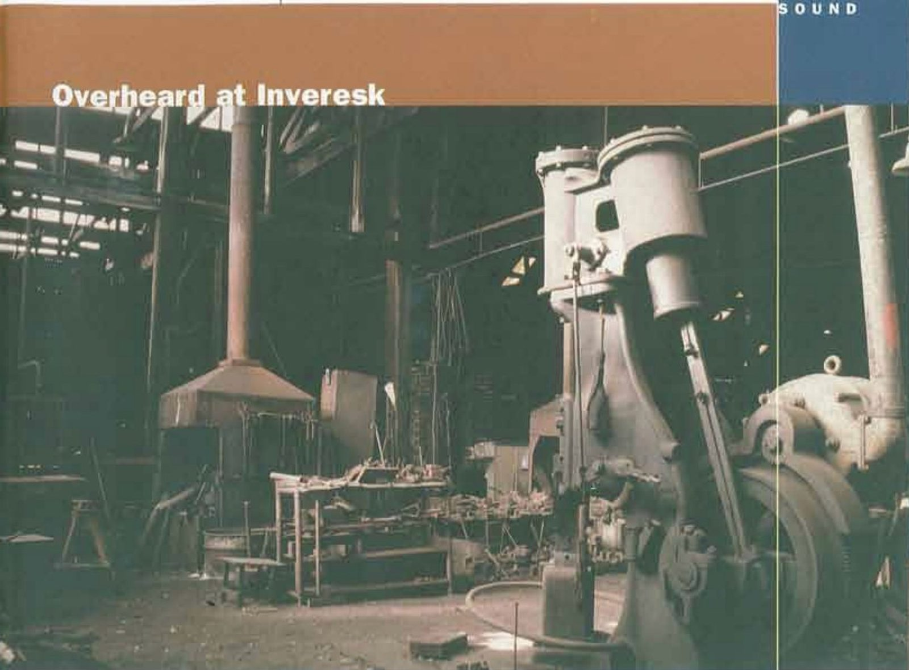
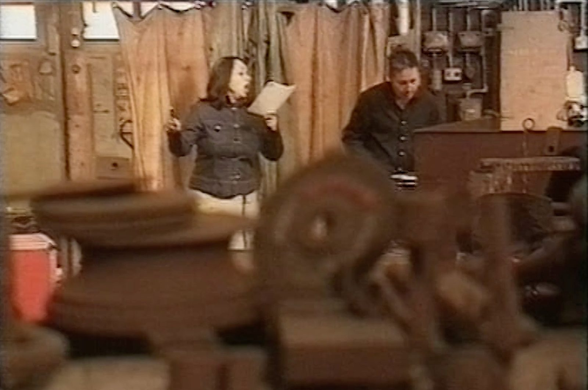

Overheard at Inveresk
The Inveresk Railyards Workshop was left exactly as it was when it shut down. The machinery was still there. The tools. Coffee cups and timesheets. Two thousand workers had streamed out through the gates every evening in the seventies, and the place had simply stopped.
Overheard at Inveresk was commissioned by Robyn Archer for the inaugural Ten Days on the Island festival in 2001. Working with sound designer Michael Hewes, I spent months in Launceston on residency — interviewing former workers, learning the names of machines, getting the machinery running again and recording it. The resulting audio was broadcast from outside the building. From the street, the workshop appeared to be alive. You could hear it working.
Inside, there was silence until soprano Maria Lurighi and percussionist Tom O'Kelly performed it back into life.

“O'Kelly conjuring crystalline sounds from the rusted rollers of a 3 metre ex-industrial gamelan.”
Jeremy Eccles, RealTime #43, 2001
Within that silence, we made a small chamber opera in ten parts — for soprano, percussionist, and electronics. The sound world drew on the machinery recordings, but also on the local university choir, a brass band, and the Launceston Pigeon Fanciers Club. The libretto wove together the voices of the former workers with the Tasmanian Government Railways Book of Rules and Regulations from 1950, and the myth of Icarus — in the figure of Naucrate, his mother.
Above the performers, a boy soprano sat on a girder. He was silent for most of the work, looking down. He sang only briefly, towards the end.

“Positive blocks of light in this smoke-blackened negative world.”
Jeremy Eccles, RealTime #43, 2001
About 500 people flocked to see what was going on inside this building that had been such an important part of Launceston's life. After the festival, the Queen Victoria Museum commissioned Michael to make the sound installation permanent.
Film
Further reading
Performances
Credits
Sound design & live processing Michael Hewes
Soprano Maria Lurighi
Percussion Tom O'Kelly
Commissioned by Robyn Archer for Ten Days on the Island, 2001
Permanent installation Queen Victoria Museum and Art Gallery, Launceston